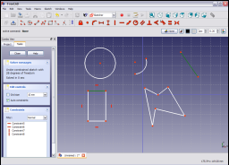
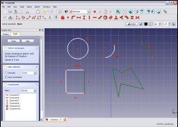

|
| Umístění Menu |
|---|
| Sketch → Sketcher constraints → Constrain equal |
| Pracovní stoly |
| Sketcher, PartDesign |
| Výchozí zástupce |
| E |
| Viz také |
| Constraint Radius |
Contents |
Popis
Vazba Shodné zajistí, že dva nebo více přímkových segmentů v přímce, lomené čáře nebo obdélníku budou mít stejnou délku. Je-li aplikováno na úhel nebo kružnici, jsou úhly nastaveny na stejnou velikost. Vazba nemůže být použita na základní konstrukce, které nejsou stejného typu (např. na segment přímky a úhel).
Použití
Zde uvedený náčrt obsahuje několik nakreslených základních prvků (přímka, lomená čára, obdélník, úhel a kružnice).

Vyberte dva nebo více segmentů (např. přímka a jedna strana obdélníka).

Klikněte na ikonu Shodné (EqualLength)
 v pruhu nástrojů kreslení (na náčrtové pracovní ploše nebo ploše pro Díl) nebo vyberte položku menu Vazba Shodné ze submenu Náčrty Vazba v hlavním menu Náčrtové pracovní plochy nebo plochy Díl, podle toho ve které pracovní ploše jste. Tím aplikujete tuto vazbu na vybrané položky.
v pruhu nástrojů kreslení (na náčrtové pracovní ploše nebo ploše pro Díl) nebo vyberte položku menu Vazba Shodné ze submenu Náčrty Vazba v hlavním menu Náčrtové pracovní plochy nebo plochy Díl, podle toho ve které pracovní ploše jste. Tím aplikujete tuto vazbu na vybrané položky.

Teď na náčrtu vyberte úhel a kružnici.

a aplikujte vazbu Shodné (Equal) jako předtím.
jako předtím.

Teď vyberte přímkový segment, všechny segmenty lomené čáry a jednu ze zbývajících neupravených stran obdélníka

a aplikujte vazbu Shodné (Equal)  jako předtím.
jako předtím.

Vyberet přímkový segment a úhel

a aplikujte vazbu Shodné (Equal)  jako předtím. Vyskakovací okénko zobrazí zprávu, která indikuje, že vybrané položky musejí být stejného konstrukčního typu (přímky s nulovým úhlem nebo přímky s nenulovým úhlem).
jako předtím. Vyskakovací okénko zobrazí zprávu, která indikuje, že vybrané položky musejí být stejného konstrukčního typu (přímky s nulovým úhlem nebo přímky s nenulovým úhlem).

{kind=link}
{kind=link}